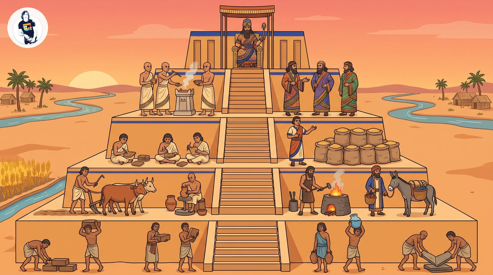

1.º ESO · Mesopotamia y Egipto
La pirámide social de Mesopotamia
Cada grupo ocupaba un lugar en la sociedad. Cuanto más arriba, más poder y riqueza… y menos personas.

Privilegiados
- 1ReyGobernaba la ciudad, dirigía el ejército y decía actuar en nombre de los dioses.
- 2Aristocracia y sacerdotesLos nobles poseían tierras y ocupaban altos cargos; los sacerdotes cuidaban los templos y sus riquezas.
- 3Escribas y funcionariosSabían escribir en escritura cuneiforme y llevaban las cuentas de los impuestos y las cosechas.
Resto de la población
- 4Campesinos, artesanos y comerciantesEran libres, pero pagaban impuestos y trabajaban en las obras públicas. Eran la mayoría.
- 5EsclavosPrisioneros de guerra o personas que no podían pagar sus deudas. No tenían libertad.